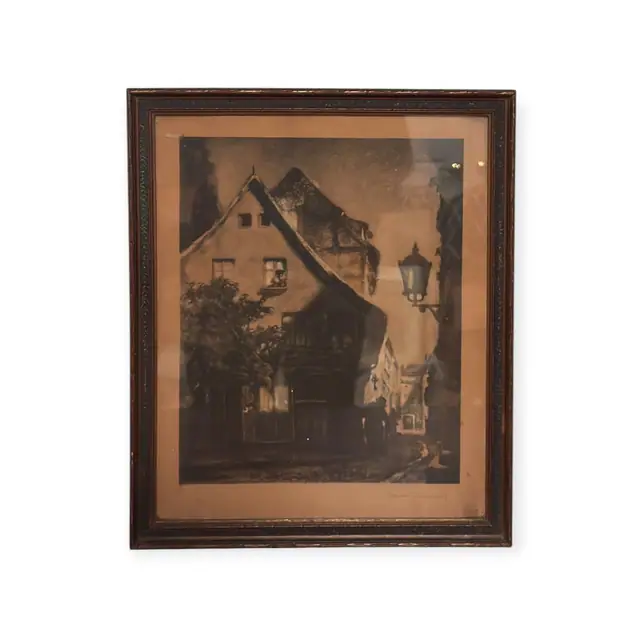
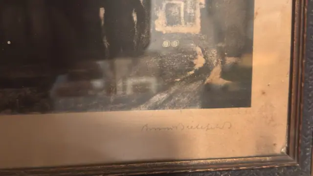
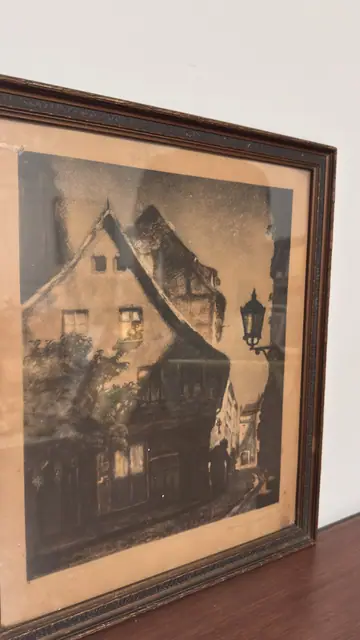

Paintings & Prints
German Night Street with Lamp, Signed Etching, Bruno Bielefeld, Signed, Framed
Bruno Bielefeld · early to mid 20th century
Price Upon Request



About the Item
Bruno Bielefeld. A moody nocturne of a German old town. A steep-gabled house with dormers and a half-timbered upper storey dominates the left, its windows glowing amber against a night of granular charcoal and umber. A wrought-iron lamp on a scrolled bracket burns at the right, throwing light down a narrow cobbled lane where a lone figure walks past shuttered shopfronts and a tangle of climbing foliage. Tone is built in soft aquatint-like granulation rather than line, with warm sepia and amber lifting the darkest passages. The sheet has toned to a deep tan and is presented without a mat, directly behind glass in a dark carved wooden frame. Medium: etching with aquatint on paper, warm-toned. Signed in pencil in the lower right margin, beneath the plate, reading "Bruno Bielefeld". Inscribed on the reverse or mount: Bruno Bielefeld. Condition: The sheet is browned overall with age, with a distinct darker stain and abrasion at the upper right of the margin and scattered foxing. The frame has losses and flaking to the moulding at the upper left corner. Heavy reflections on the glass throughout.
Details
- Creator:
- Bruno Bielefeld
- Creation Year:
- early to mid 20th century
- Dimensions:
- Height: 16.6 in (42.16 cm)
Width: 13.6 in (34.54 cm)
outside of frame - Medium:
- etching with aquatint on paper, warm-toned
- Period:
- 20Th
- Condition:
- Offered in the condition shown in the photographs.
- Reference Number:
- VO-182
- Documentation:
- no certificate photographed
- Gallery Location:
- Bruno Bielefeld